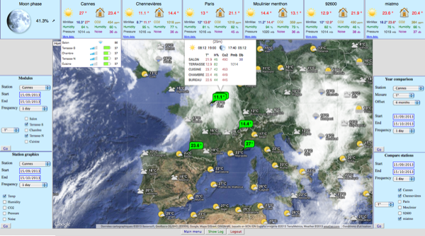
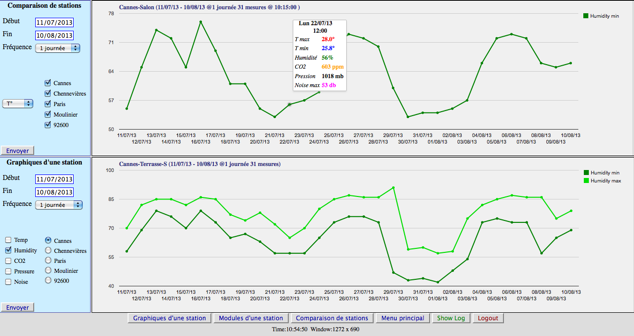
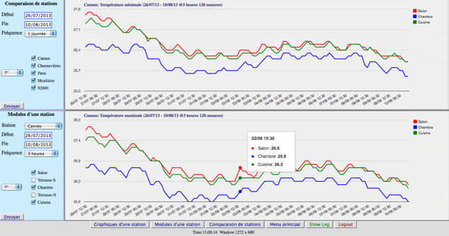
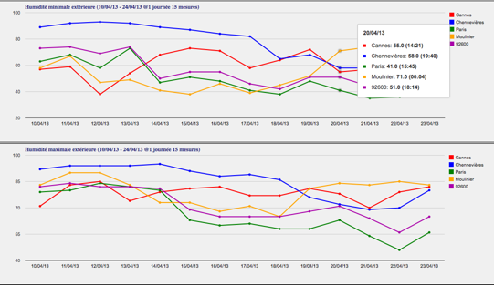

This program uses the Netatmo php sdk and some Google development tools for the graphics.
The server needs to have a php version >= 5, with curl and json enabled.
If you have a Netatmo account, you can see a demo at Netatmo.
The goal of this program is to display all the available measures and data of the stations
and interactively draw graphics.
Main windows
- Display the last measures on a Google map of all the stations and all their modules.
- Graphics of the measures of each station:
(5 minutes, 30 minutes, 3 hours, 1 day, 1 week).
When you change the measures that you want to display, the data are only reloaded from Netatmo
if you modify the dates , the frequency or the station and if the last measures are older than the frequency.
- Graphics comparing the outdoor measures of selected stations: temperature, humidity or pressure,
(1 day or 1 week),
- Graphics comparing the measures of all your modules: temperature, humidity or noise,
(30 minutes, 3 hours, 1 day or 1 week),
Google map
- Move over a green marker, to display the measures of a station.
- Left click on a green marker to zoom on the marker .
- Right click on a green marker to hide the marker .
- Left click on a meteo marker to get weather forecast.
- Left click on Home to redraw the map to original position,
- Left click on Hide Clouds / Show Clouds to display or not the cloud layer.
- Left click on Hide Markers / Show Markers to hide or restore the green markers.
Icons :
- Move over a measure to display the date of the measure,
over the station name, to display the latitude and longitude of the station.
All graphics
-
Dates of measures
-
If you set the date of the beginning of the measures to the date of the end of the measures,
the program
computes the starting date automatically according to the frequency of measures:
| Frequency | Period of measures |
|---|
| 1 week | 6 months |
| 1 day | 1 month |
| 3 hours | 2 weeks |
| 30 minutes | 2 days |
| 5 minutes | 12 hours |
-
Zooming and erasing curves
-
If you click on the name of a curve (the squares inside the drawing), the corresponding curve will be erased
and the drawing will be rescaled without reloading the data.
-
To zoom, click on a point of the curve: the frequency of measures will be increased (if possible),
if the curve has less than 20 points and the frequency is maximal, nothing will happen.
By default, this zoom feature is disabled on Ipad.
Other remarks
- If you use index.php and your user id and password are not in Config.php, you are logged through Netatmo.
- If you use indexLogin.php your user name and password are sent in a not crypted connection.
Install
- Unzip the archive
- Put your personal information in Config.php.EXEMPLE and renamed it Config.php
- open index.php in your web browser
- You can also start the progamm, opening graphiques.php or compareALL.php
Configuration
The variable $Temperature_unit, defined in Config.php set the unit of temperature measures:
- $Temperature_unit = 1 => Celsius
- $Temperature_unit = 0 => Fahrenheit
Screenshots
Main screen

Graphics
| Graphics of one station |
Comparing the temperature among modules of one station |
|  |
 |
| Comparing the humidity among stations | |
|  | |